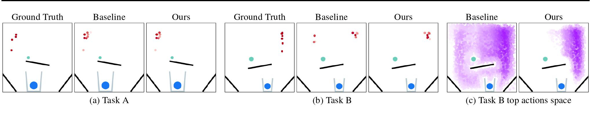
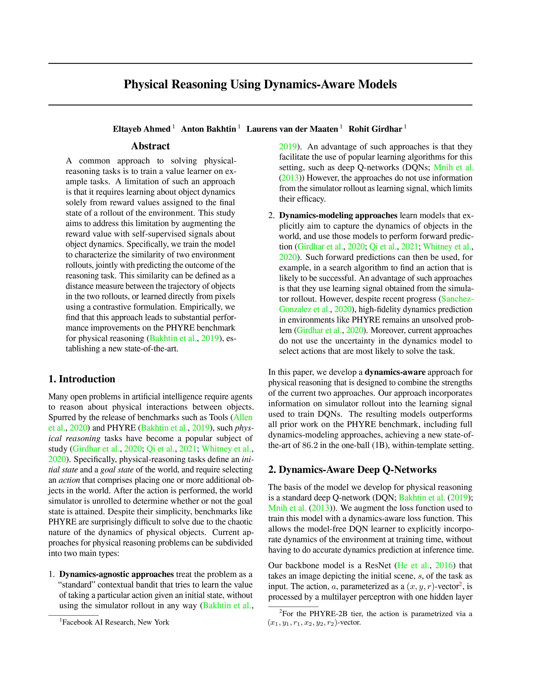

Physical Reasoning Using Dynamics Aware Embeddings
|  |
| A common approach to solving physicalreasoning tasks is to train a value learner on example tasks. A limitation of such an approach is that it requires learning about object dynamics solely from reward values assigned to the final state of a rollout of the environment. This study aims to address this limitation by augmenting the reward value with self-supervised signals about object dynamics. Specifically, we train the model to characterize the similarity of two environment rollouts, jointly with predicting the outcome of the reasoning task. This similarity can be defined as a distance measure between the trajectory of objects in the two rollouts, or learned directly from pixels using a contrastive formulation. Empirically, we find that this approach leads to substantial performance improvements on the PHYRE benchmark for physical reasoning, establishing a new state-of-the-art. |
People
|
Eltayeb Ahmed |
Anton Bakhtin |
Laurens van der Maaten |
Rohit Girdhar |
Paper
|  |
E. Ahmed, A. Bakhtin, L. van der Maaten and R. Girdhar Physical Reasoning Using Dynamics-Aware Models Self-Supervised Learning for Reasoning and Perception Workshop, ICML 2021 [arXiv] [code] [BibTex] |
Acknowledgements
The authors thank Chaitanya Talnikar, Stephane Deny, Brandon Amos, and the entire Facebook AI Research team for many helpful discussions.